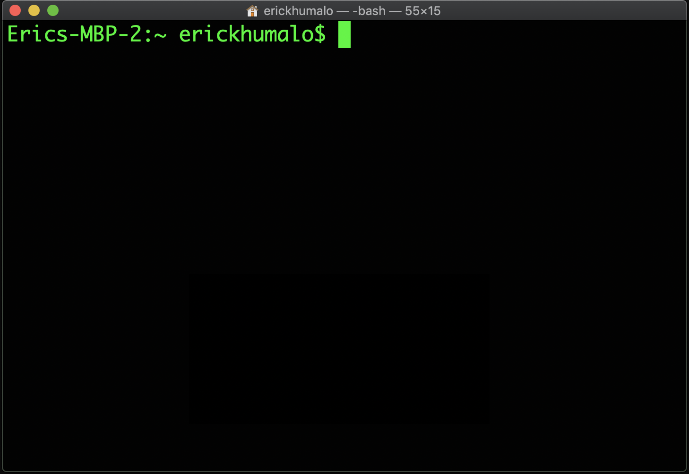
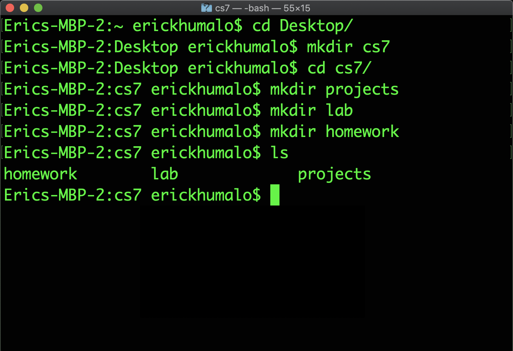

Lab 1: Workflow and Python Basics
Due at 11:59pm on Friday, 07/05/2019.
Starter Files
Download lab1.zip. Inside the archive, you will find starter files for the questions in this lab.
Submission
By the end of this lab, you should run the submission file
Introduction
This lab explains how to use your own computer to complete assignments for CS7, as well as introduce some of the basics of Python.
If you need any help at any time through the lab, please feel free to come to office hours or post on the WhatsApp Discussion Group
This lab looks really long, but it's mostly setup and learning how to use essential tools for this class; these may seem a bit difficult now, but quickly become second nature as we move further into the course.
Install a terminal
The terminal is a program that allows you to interact with your computer by entering commands. No matter what operating system you use (Windows, macOS, Linux), the terminal will be an essential tool for CS7.
macOS/Linux
If you're on a Mac or are using a form of Linux (such as Ubuntu), you already
have a program called Terminal or something similar on your computer. Open
that up and you should be good to go.
Windows
For Windows users, we recommend a terminal called Git-Bash. You can try either method below:
Alternate (manual) method:
First, if you already tried the automatic installer above, make sure it's fully cleaned up:- Look for Git as an installed program in "Add/Remove Programs", and, if it exists, uninstall it.
- Once Git is no longer installed, if a
C:\Program Files\Gitfolder still exists, delete that too.
Now download and install Git Bash. You can use the default options, with one exception:
Select Use Windows' default console window in the Configuring the terminal emulator to use with Git Bash step.
This is very important! If you do not select this option, your terminal won't work with Python!

Install Python 3
Python 3 is the primary programming language used in this course.
Use the instructions below to install the Python 3 interpreter.
(The instructions may feature older versions of Python 3, but the steps are similar.)
Linux
Run sudo apt install python3 (Ubuntu), sudo pacman -S python3 (Arch),
or the command for your distro.
macOS
Download and install Python. Refer to this video for additional help on setting up Python.
You may need to right-click the download icon and select "Open". After installing please close and open your Terminal.
Windows
If you used our automated installer successfully, skip to the next section—you should already have Python.
Otherwise, if you're installing manually, download Python and
make sure to check the "Add Python 3.x to PATH" box,
which will allow you to execute the python command from your terminal.
After installing please close and open your Terminal.

Other
Download Python from the generic download page. (Scroll down to "Files".)
Install a text editor
The Python interpreter that you just installed allows you to run Python code. You will also need a text editor, where you will write Python code.
There are many editors out there, each with its own set of features. We find that Atom and Sublime Text 3 are popular choices among students, but you are free to use other text editors.
Note: Please, please, please do not use word processors such as Microsoft Word to edit programs.
For your reference, we've also written some guides on using popular text editors. After you're done with lab, you can take a look if you're interested:
Using the terminal
Let's check if everything was installed properly! First, open a new terminal window, if you haven't already.

When you first open your terminal, you will start in the home directory. The
home directory is represented by the ~ symbol.
Don't worry if your terminal window doesn't look exactly the same; the important part is that the text on the left-hand side of the
$has a~(tilde). That text might also have the name of your computer.
If you see your home directory instead of~: Try runningecho ~. If it displays the same path, that's also fine.
Python Interpreter
We can use the terminal to check if your Python 3 interpreter was installed correctly. Try the following command:
python3If the installation worked, you should see some text printed out about the
interpreter followed by >>> on its own line. This is where you can type in Python
code. Try typing some expressions you saw in lecture, or just play around to see
what happens! You can type exit() or Ctrl-D to return to your command line.
If you are using Windows and the
python3command doesn't work, try using justpythonorpy. If neither works:Ask for help!
Organizing your files
In this section, you will learn how to manage files using terminal commands.
Make sure your prompt contains a
$somewhere in it and does not begin with>>>. If it begins with>>>you are still in a Python shell, and you need to exit. See above for how.
Directories
The first command you'll use is ls. Try typing it in the terminal:
lsThe ls command lists all the files and folders in the current
directory. A directory is another name for a folder (such as the
Documents folder). Since you're in the home directory right now, you
should see the contents of your home directory.
Changing directories
To move into another directory, use the cd command. Let's try moving into your
Desktop directory. First, make sure you're in your home directory (check for the
~ on your command line) and use ls to see if the Desktop directory is present.
Try typing the following command into your terminal, which should move you into
that directory:
cd DesktopIf your desktop directory is not located within your home directory and you can't find it, ask Eric for help.
There are a few ways to return to the home directory:
cd ..(two dots). The..means "the parent directory". In this case, the parent directory ofcs7is your home directory, so you can usecd ..to go up one directory.cd ~(the tilde). Remember that~means home directory, so this command will always change to your home directory.cd(cdon its own). Typing justcdis a shortcut for typingcd ~.
You do not have to keep your files on your Desktop if you prefer otherwise. Where you keep your files locally will not affect your grade. Do whatever is easiest and most convenient for you!
Making new directories
The next command is called mkdir, which makes new
directories. Let's make a directory called cs7 on your Desktop to store
all of the assignments for this class:
mkdir cs7A folder named cs7 will appear on your Desktop. You can verify this by
using the ls command again or by simply checking your Desktop.
At this point, let's create some more directories. First, make sure you are in
the ~/Desktop/cs7 directory. Then, create folders called projects and lab
inside of your cs7 folder:
cd ~/Desktop/cs7
mkdir projects
mkdir labNow if you list the contents of the directory (using ls), you'll see two
folders, projects and lab.

Downloading the assignment
If you haven't already, download the zip archive, lab1.zip, which
contains all the files that you'll need for this lab. Once you've done that, let's
find the downloaded file. On most computers, lab1.zip is probably located in a
directory called Downloads in your home directory. Use the ls command to
check:
ls ~/DownloadsIf you don't see lab1.zip, ask a TA or lab assistant for help.
Extracting starter files
You must expand the zip archive before you can work on the lab files. Different operating systems and different browsers have different ways of unzipping. If you don't know how, you can search online.
Using a terminal, you can unzip the zip file from the command line. First,
cdinto the directory that contains the zip file:cd ~/DownloadsNow, run the
unzipcommand with the name of the zip file:unzip lab1.zipYou might also be able to unzip files without using the terminal by double clicking them in your OS's file explorer.
Once you unzip lab1.zip, you'll have a new folder called lab1 which
contains the following files (check it out with cd and ls):
lab1.py: The template file you'll be adding your code took: A program used to test and submit assignmentslab1.ok: A configuration file forok
Moving files
Move the lab files to the lab folder you created earlier:
mv ~/Downloads/lab1 ~/Desktop/cs7/labThe mv command will move the ~/Downloads/lab1 folder
into the ~/Desktop/cs7/lab folder.
Now, go to the lab1 folder that you just moved. Try using cd to navigate
your own way! If you get stuck, you can use the following command:
cd ~/Desktop/cs7/lab/lab1Summary
Here is a summary of the commands we just went over for your reference:
ls: lists all files in the current directorycd <path to directory>: change into the specified directorymkdir <directory name>: make a new directory with the given namemv <source path> <destination path>: move the file at the given source to the given destination
Finally, you're ready to start editing the lab files! Don't worry if this seems complicated -- it will get much easier over time. Just keep practicing! You can also take a look at our UNIX tutorial for a more detailed explanation of terminal commands.
Python Basics
Expressions and statements
Programs are made up of expressions and statements. In very simple terms, an expression is a piece of code that evaluates to some value and a statement is one or more lines of code that make something happen in a program.
When you type a Python expression into the Python interpreter, its value will be printed out. As you read through the following examples, try out some similar expressions in your own Python shell, which you can start up by typing this in your terminal:
python3Remember, if you are using Windows and the
python3command doesn't work, try usingpythonorpy. See the install Python 3 section for more info and ask for help if you get stuck!
You'll be learning various types of expressions and statements in this course. For now, let's take a look at the ones you'll need to complete today's lab.
Primitive expressions
Primitive expressions only take one step to evaluate. These include numbers and booleans, which just evaluate to themselves.
>>> 3
3
>>> 12.5
12.5
>>> True
TrueNames are also primitive expressions. Names evaluate to the value that they are bound to in the current environment. One way to bind a name to a value is with an assignment statement.
Arithmetic expressions
Numbers may be combined with mathematical operators to form compound expressions. In addition to + operator (addition), the - operator (subtraction), the * operator (multiplication) and the ** operator (exponentiation), there are three division-like operators to remember:
- Floating point division (
/): divides the first number number by the second, evaluating to a number with a decimal point even if the numbers divide evenly - Floor division (
//): divides the first number by the second and then rounds down, evaluating to an integer - Modulo (
%): evaluates to the positive remainder left over from division
Parentheses may be used to group subexpressions together; the entire expression is evaluated in PEMDAS order.
>>> 7 / 4
1.75
>>> (2 + 6) / 4
2.0
>>> 7 // 4 # Floor division (rounding down)
1
>>> 7 % 4 # Modulus (remainder of 7 // 4)
3Assignment statements
An assignment statement consists of a name and an expression. It changes the state of the program by evaluating the expression and binding its value to the name in the current frame.
>>> a = (100 + 50) // 2Note that the statement itself doesn't evaluate to anything, because it's a
statement and not an expression. Now, if we ask for a's value, the interpreter
will look it up in the current environment and output its value.
>>> a
75Note that the name a is bound to the value 75, not the expression
(100 + 50) // 2. Names are bound to values, not expressions.
Doing the assignment
Test your understanding and make sure you have a good enough grasp on the topic to make progress on the assignment.
>>> 10 + 2
______12
>>> 7 / 2
______3.5
>>> 7 // 2
______3
>>> 7 % 2 # 7 modulo 2, equivalent to the remainder of 7 // 2
______1>>> x = 20
>>> x + 2
______22
>>> x
______20
>>> y = 5
>>> y += 3 # Equivalent to y = y + 3
>>> y * 2
______16
>>> y //= 4 # Equivalent to y = y // 4
>>> y + x
______22Understanding problems
Labs will also consist of function writing problems. Open up lab1.py in
your text editor. You can type open . on MacOS or start . on Windows to
open the current directory in your Finder/File Explorer. Then double click or
right click to open the file in your text editor. You should see something like
this:
def twenty_nineteen():
"""Come up with the most creative expression that evaluates to 2019,
using only numbers and the +, *, and - operators.
>>> twenty_nineteen()
2019
"""
return ______
return 3 * (3 * (3 * (3 * (3 * (3 * 3))) - 2019 + 2000) + 1)The lines in the triple-quotes """ are called a docstring, which is a
description of what the function is supposed to do. When writing code in 61A,
you should always read the docstring!
The lines that begin with >>> are called doctests. Recall that when using the
Python interpreter, you write Python expressions next to >>> and the output is
printed below that line. Doctests explain what the function does by showing actual
Python code: "if we input this Python code, what should the expected output be?"
In twenty_nineteen,
- The docstring tells you to "come up with the most creative expression that
evaluates to 2019," but that you can only use numbers and arithmetic operators
+(add),*(multiply), and-(subtract). - The doctest checks that the function call
twenty_nineteen()should return the number 2019.
You should not modify the docstring, unless you want to add your own tests! The only part of your assignments that you'll need to edit is the code.
Writing code
Once you understand what the question is asking, you're ready to start writing
code! You should replace the underscores in return ______ with an expression that
evaluates to 2019. What's the most creative expression you can come up with?
Don't forget to save your assignment after you edit it! In most text editors, you can save by navigating to File > Save or by pressing Command-S on MacOS or Ctrl-S on Windows.
Appendix: Useful Python command line options
When running a Python file, you can use options on the command line to inspect your code further. Here are a few that will come in handy. If you want to learn more about other Python command-line options, take a look at the documentation.
Using no command-line options will run the code in the file you provide and return you to the command line.
python3 lab1.py-i: The-ioption runs your Python script, then opens an interactive session. In an interactive session, you run Python code line by line and get immediate feedback instead of running an entire file all at once. To exit, typeexit()into the interpreter prompt. You can also use the keyboard shortcutCtrl-Don Linux/Mac machines orCtrl-Z Enteron Windows.If you edit the Python file while running it interactively, you will need to exit and restart the interpreter in order for those changes to take effect.
python3 -i lab1.py-m doctest: Runs doctests in a particular file. Doctests are surrounded by triple quotes (""") within functions.Each test in the file consists of
>>>followed by some Python code and the expected output (though the>>>are not seen in the output of the doctest command).python3 -m doctest lab1.py